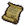
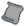

Certificate, Please
Bring a Burial Certificate to Herbert, head of the guards. He's at the Crossroads.—speaker
Certificate, Please is a quest from Herbert.
Requirements

Burial Certificate I (not consumed)
Rewards
- Unlocks Expand graveyard I
- 1x

Story  Reputation with Herberrt: +10
Reputation with Herberrt: +10- Happiness +10
Template:Quest navbox